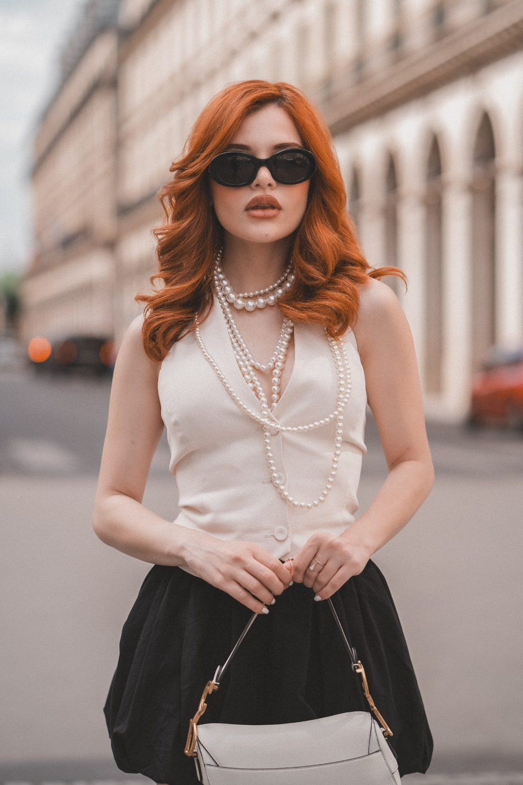
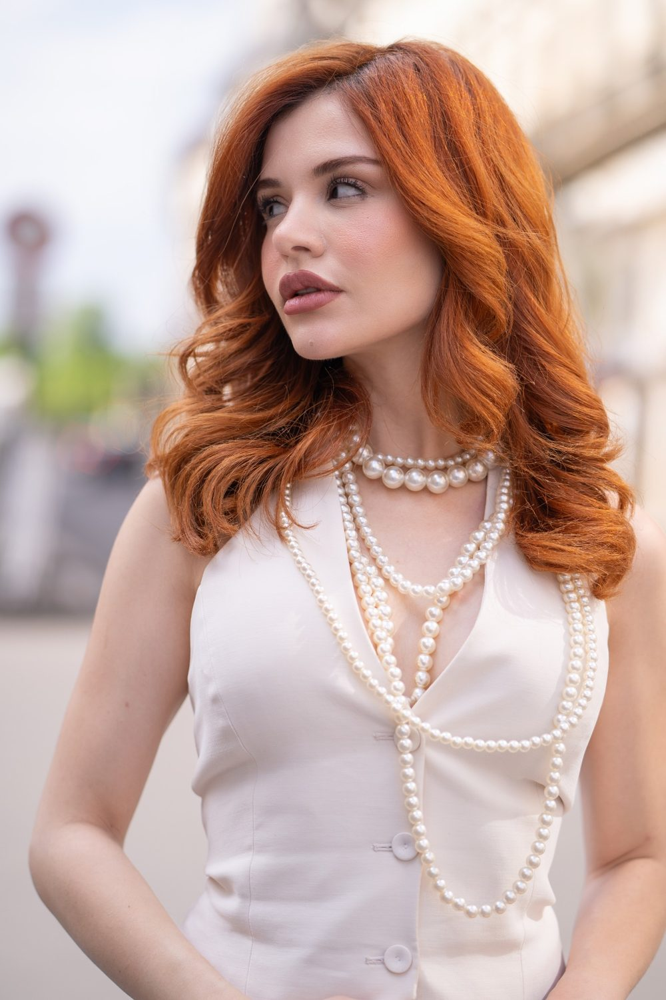
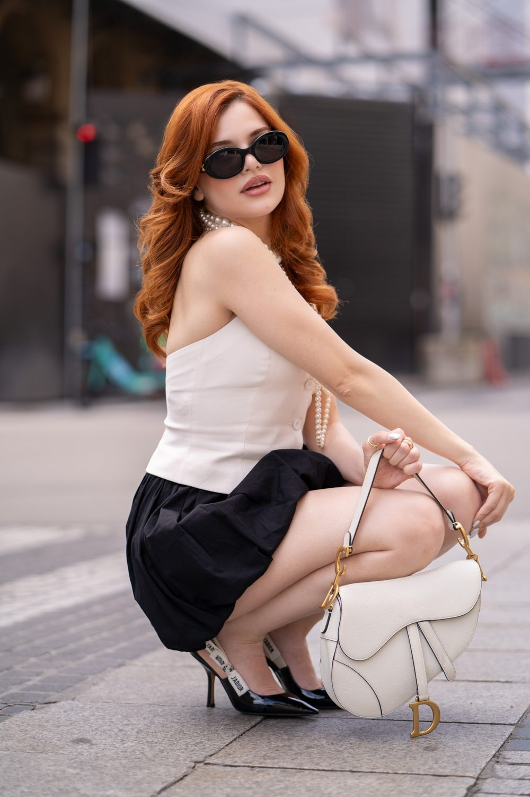
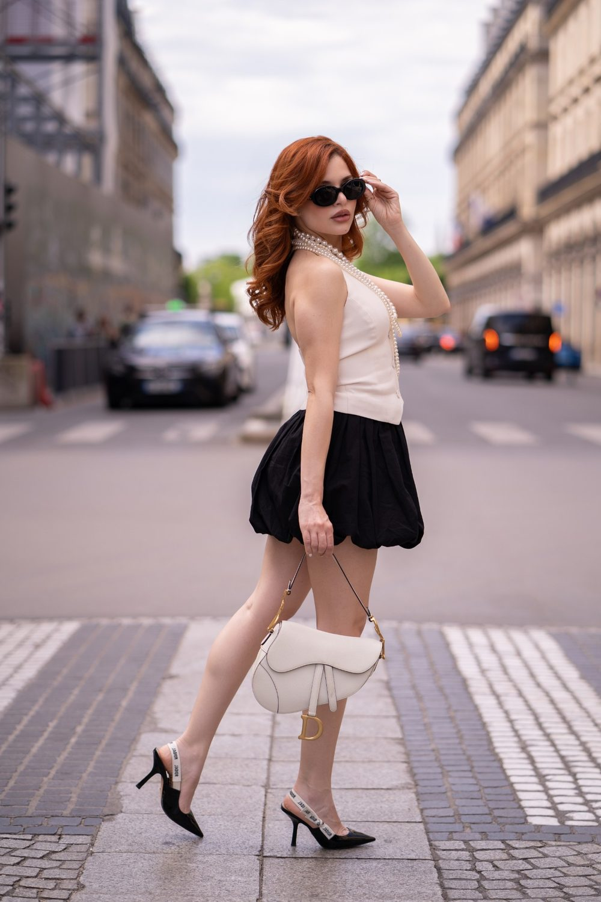

Portrait solo à Paris 6e
Le 6e arrondissement mêle Saint-Germain-des-Prés, le jardin du Luxembourg et l'Institut de France. Pour un portrait solo, nous aimons le cadre de Rue de Fleurus et celui de Place Saint-Sulpice.

Où faire votre shooting
Un shooting solo à Paris 6e suit la Rue de Fleurus, le Pont des Arts puis le Jardin du Luxembourg, pour varier les fonds à pied. Seul face à l'objectif, vous n'êtes jamais livré à vous-même. Rue de Fleurus, les hôtels particuliers composent un décor de roman : appuyé contre une porte cochère, un manteau sur l'épaule. Le Pont des Arts prend le relais pour des portraits en mouvement, regard vers la Seine. Une chaise verte du Luxembourg offre un moment plus calme. Des plans au ralenti donnent un format vertical.
Nos lieux pour cette séance
Rue de Fleurus
Hôtels particuliers et façades de pierre. Une rue au caractère affirmé pour un portrait urbain et naturel.
Place Saint-Sulpice
Fontaine et église aux deux tours. Une grande façade ou un monument pour un portrait plus graphique.
Jardin du Luxembourg
Parterres, bassin et chaises vertes. Un jardin ou un parc pour un portrait doux et lumineux, avec de la verdure derrière vous.
Pont des Arts
Passerelle sur la Seine face à l'Institut.
Bien choisir son moment
Élégance littéraire, cafés historiques et jardins ouverts. Le jardin du Luxembourg est très lumineux en milieu de matinée.
Pas besoin d'être modèle. Nous vous aidons à trouver votre posture, à choisir des tenues, à passer de la gêne au naturel. Nous parlons, nous marchons, nous laissons les images venir.
Changer de tenue en pleine rue n'a rien de pratique. Un café du quartier peut servir de pause entre deux looks ; sinon, choisissez des superpositions simples, une veste ou un foulard à ôter.
À Paris 6e, vous êtes à Métro Saint-Sulpice, Odéon, Saint-Germain-des-Prés : nous préparons l'itinéraire entre les lieux avec vous.



Avant de nous écrire
Où faire un shooting solo à Saint-Germain-des-Prés ?
Un shooting solo autour de Saint-Germain-des-Prés, à Paris 6e, combine la Rue de Fleurus pour un portrait élégant, le Pont des Arts pour la Seine et le Jardin du Luxembourg pour la verdure. Le trajet varie les fonds tout en restant à pied.
Je ne suis pas à l'aise en photo, une séance solo dans Paris 6e est-elle adaptée ?
Une séance solo à Paris 6e convient aussi aux personnes peu à l'aise en photo. Nous marchons, discutons et vous guidons pas à pas sur les postures. Les rues calmes aident à oublier l'appareil avant de rejoindre les lieux plus animés.
Comment venir à Paris 6e ?
Métro Saint-Sulpice, Odéon, Saint-Germain-des-Prés. Nous nous déplaçons avec notre matériel photo et vidéo.
Livrez-vous des retouches poussées ?
Nous faisons une retouche naturelle. Une retouche plus poussée peut être discutée sur devis.
Parlons de votre mariage
Demander un devisSolo ailleurs en Île-de-France
© Le Couple Photographe · Photographe de mariage Paris & Île-de-France · Mis à jour le 10 octobre 2026
Demander un devis